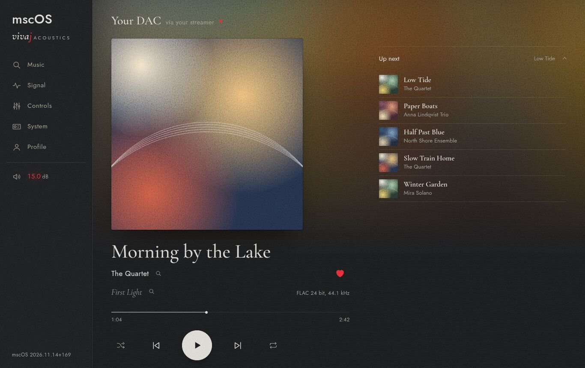
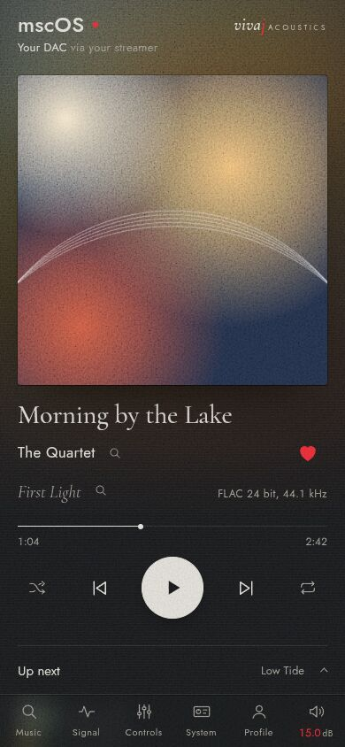
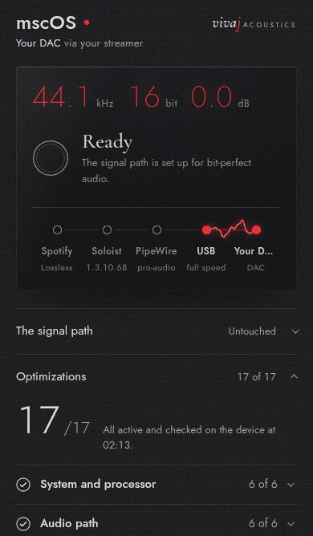
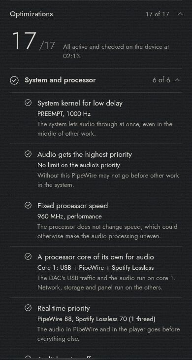
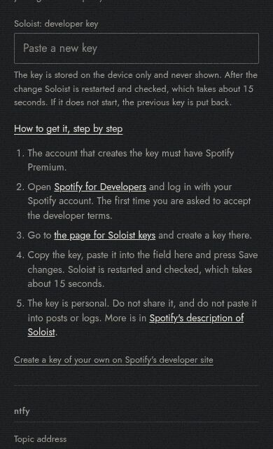
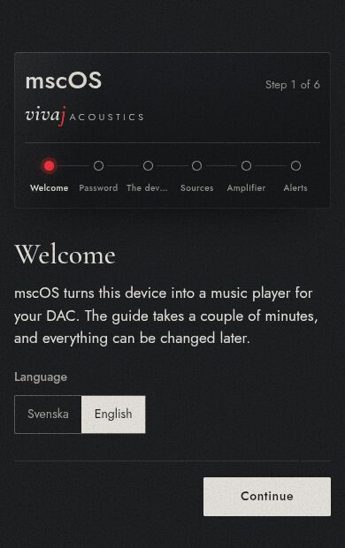
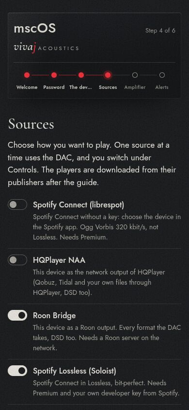
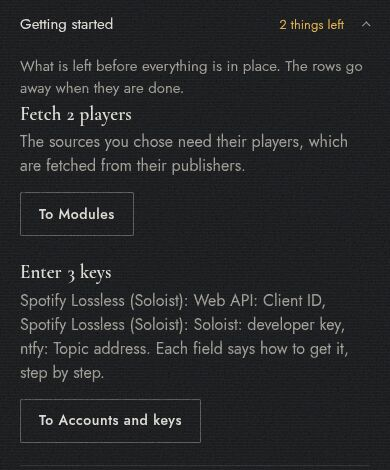

Spotify Lossless, bit-perfect, on the streamer you already own.
Your streamer may never get an update for Spotify Lossless. mscOS replaces its software and turns it into a current audiophile network player: Spotify Lossless, Roon, HQPlayer, Qobuz and Tidal reach your USB DAC bit for bit, in up to 24-bit FLAC and native DSD. Nothing resamples, mixes or scales the signal, and a control panel on your phone shows the measured result.
The highest quality your DAC and your subscription can deliver. Open source, for any USB DAC.


A second life for a good streamer.
The hardware in a well-made streamer does not age: a clean USB output and a quiet power supply stay good. The software does. mscOS runs from an SD card of its own. The maker's software stays untouched, and you can go back to it whenever you like.
- SOtM sMS-200, sMS-200ultra
- Runs today. In daily use on an sMS-200ultra, with Spotify Lossless and Roon.
- SOtM sMS-200 Neo, sMS-200ultra Neo and SE
- To be confirmed. Believed to use the same board as the sMS-200. Not tried yet.
- Raspberry Pi 4 and 5, CM4 and CM5
- Not yet tested. Also the streamers built around them. The image is made but has not been started on a device yet.
- Mini PCs and Intel NUC
- Not yet tested. Any x86-64 PC with UEFI, such as a NUC that ran Roon ROCK. The image starts in a virtual machine and has not been tried on a real PC yet.
- Odroid C4 and N2+
- Planned. Popular boards for DIY streamers.
- Radxa Rock, Orange Pi 5, NanoPi
- Planned. Strong enough to run HQPlayer on the device itself.
Streamers with a closed system, such as those from Lumin, Innuos and Sonore, cannot run other software without their maker's help. Do you have a streamer that boots from an SD card or USB? Tell the project which one.
Bit-perfect, and proven on your own system.
Every streamer says it is bit-perfect. mscOS records twenty seconds of exactly what goes to your DAC and checks, sample by sample, that the lossless stream arrived untouched. Each track is also measured as it starts, so you see whether it really is 16 or 24 bit.
- Sample rate, bit depth and gain, shown as measured.
- A lamp for every stage of the signal path, from the source to the DAC.
- Asynchronous USB: your DAC's own clock sets the pace, and the panel measures it.
- Dropouts counted around the clock, with an alert to your phone if one occurs.

Every lossless source, one streamer.
One source at a time has the DAC to itself, in exclusive mode where the player supports it.
- Spotify Lossless
- Lossless FLAC up to 24 bit, through Soloist, Spotify's own Connect player. It needs a Premium account and a personal key that you create at Spotify; the setup guide shows how.
- Spotify Connect
- For guests and for accounts without Lossless, at 320 kbit/s.
- Roon
- A Roon endpoint through Roon Bridge and RAAT, for the Roon server on your network. You can browse your Roon library in the panel too.
- HQPlayer
- A network audio adapter (NAA) for upsampled PCM and DSD from HQPlayer on another computer.
- UPnP and OpenHome
- Hi-res Qobuz, Tidal and your own files, from apps such as mconnect and BubbleUPnP.
- Native DSD
- DSD64 and DSD128 without conversion to PCM, for DACs that take raw DSD over USB.
Your library, in your hand.
The panel runs as an app on your iPhone or Android phone, with no app store involved.
- Search Spotify or Roon. Open an artist and see the whole discography in release order, with the tracks under each album.
- Your Spotify playlists, saved albums and liked tracks, sorted into folders of your own. The playlists you add to most come first.
- Liner notes for what plays: the song, the album, the artist and who plays on it.
- Lyrics that follow the music, line by line.
Notes and lyrics come from Wikipedia, MusicBrainz, Discogs, Last.fm and LRCLIB. This is off until you turn it on, because the streamer then asks those services about what is playing.
A machine that does nothing but play.
A general-purpose computer does a hundred things besides playing music. mscOS strips it down to one. A processor core is reserved for the audio and the DAC's USB traffic, the audio runs at real-time priority, the processor holds a fixed speed, and no background job runs while music plays.
The panel lists every one of these measures and checks each one live on your streamer.


Volume where it belongs: in your amplifier.
Digital volume costs resolution. If your amplifier can be controlled over the network, the volume slider in the Spotify app drives the amplifier's own volume, so the signal stays bit-perfect at every level.
- Volume, inputs and standby of a network-controlled amplifier.
- An AV receiver that switches between music and television.
- Alerts to your phone when the DAC disappears, a source stops or the sound drops out.
- A listening diary at ListenBrainz.
mscOS works with any USB DAC and needs none of these. Each one is an add-on module that you switch on in the panel, and you can write your own for your equipment.
How it is built.
The players are their publishers' own programs. mscOS gives each one a clean, short path to your DAC.
The path of the sound
Underneath
What sets it apart.
Bit-perfect you can check
Other streamers ask you to trust the word. mscOS compares what reaches your DAC with the lossless original and shows you the result.
Works with what you already have
Your USB DAC, and the Spotify, Roon, Qobuz or Tidal subscription you already pay for. A guide takes you through the setup in a few minutes.
Free, with no subscription
mscOS is open source and costs nothing. There is no account to create and nothing to renew.
Private
Your listening stays in your home. Nothing is reported anywhere unless you turn on a feature that needs it, and then the panel says what is shared and with whom.
Get started.
Build the image for your device and write it to an SD card, or install the packages on a Debian 13 system you already run. There is no ready-made download yet.
Start the device on wired network and open
http://mscos.localin a browser.Follow the guide: language, a password, names, sources, amplifier, alerts.
Install the players you want from the panel; each is downloaded from its publisher. Enter the keys for your own accounts, and add the panel to your phone's home screen. The panel lists what is left to do.



Where it stands.
mscOS runs every day on one SOtM sMS-200ultra. The images for Raspberry Pi, x86-64 PCs and arm64 boards are made, and the PC image starts in a virtual machine, but none of them has been started on real hardware yet.
If you try one, the project would like to hear how it went. The status table in the README says what is tested and on what.